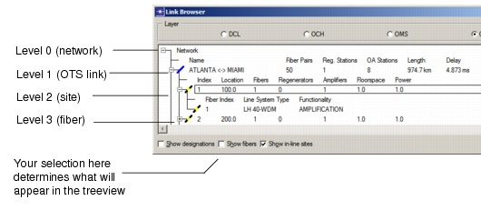
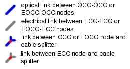
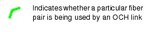

Viewing and Configuring Objects > Link Browser > OTS Link Browser
OTS Link Browser
The OTS Link Browser, shown in Figure 4-2, shows physical characteristics such as the number of fiber pairs, the number of regenerator/amplification sites, and the fiber length per link. The fields and icons for this browser are described in Table 4-1-OTS Link Browser: Treeview .
The information shown at different levels of the treeview depends on the options selected at the bottom of the dialog box. The "Show fibers" and "Show in-line sites" dialog box options are mutually exclusive and result in more details for each OTS link regarding its fibers or in-line sites. Additionally, you can enable or disable the "Show designations" option for either "Show fibers" or "Show in-line sites" to see user-assigned designations as the name of a link resource or sub-resource rather than generic names or indices.
Figure 4-2 OTS Link Browser

- Name—Link name
- Fiber Pairs—Number of available fiber pairs
- Reg. Stations—Number of regeneration stations on link
- OA Stations—Number of optical amplification stations on link
- Length—Link length from start to end node
- Delay—Delay on link
- Designed—Yes or No shows whether the link has been designed or not
- User Cost—User-specified routing cost

site

1With "Show in-line sites" option selected
2With "Show fibers" option selected
| Home © 1987-2007 OPNET Technologies, Inc. All Rights Reserved. This software may be covered by one or more U.S. Patents. See complete patent notice in the Legal Notices section. OPNET Support Center |